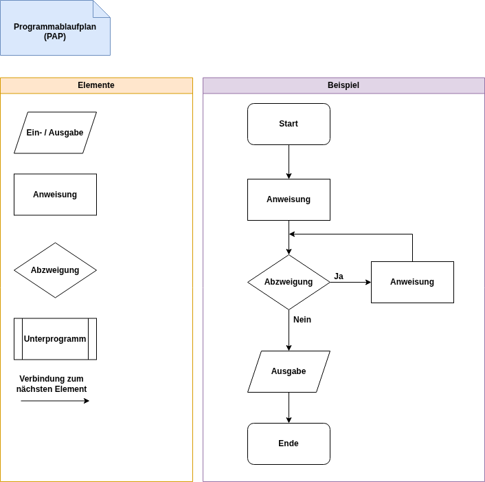
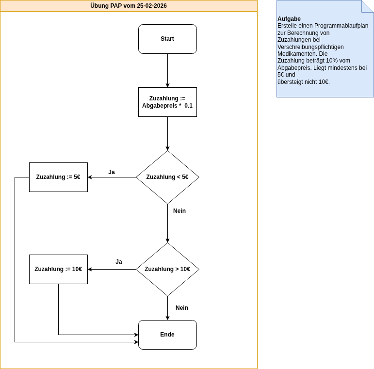
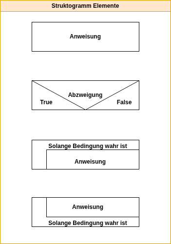
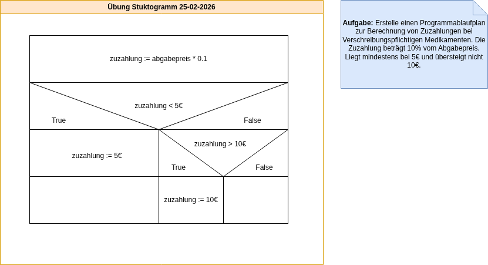

In diesem Abschnitt werden die Phasen der Softwareentwickelung beschrieben.
Bei der Anforderungsanalyse werden die Anforderungen bestimmt. Dazu müssen die konkreten Vorstellungen des Auftraggebers erfasst werden. Eine Analyse des Ist-Zustandes (Geschäftsprozesse, vorhandene Daten) muss erfolgen und eine Aufwandsabschätzung gemacht werden. Wichtige Instrumente in diesem Schritt sind das Lasten- und Pflichtenheft.
Das Lastenheft wird vom Auftraggeber erstellt und enthält alle Anforderungen an die Software.
Das Pflichtenheft wird vom Auftraggeber entwickelt. Es beantwortet die Fragen wie und womit die im Lastenheft gestellten Anforderungen realisiert werden.
Ein Programmablaufplan ist eine grafische Darstellung zur Umsetzung eines Algorithmus. Die Symbole sind nach DIN 66001 genormt.

Aufgabe:
Erstelle einen Programmablaufplan zur Berechnung von Zuzahlungen bei Verschreibungspflichtigen Medikamenten. Die Zuzahlung beträgt 10% vom Abgabepreis. Liegt mindestens bei 5€ und übersteigt nicht 10€.

Das Struktogramm ist ein Diagrammtyp zur Darstellung von Programmentwürfen. Es wird auch als Nassi-Shneiderman-Diagram bezeichnet.

Aufgabe:
Erstelle ein Struktogramm zur Berechnung von Zuzahlungen bei Verschreibungspflichtigen Medikamenten. Die Zuzahlung beträgt 10% vom Abgabepreis. Liegt mindestens bei 5€ und übersteigt nicht 10€.

Pseudocode dient zur Veranschaulichung eines Algorithmus. Er ähnelt höheren Programmiersprachen gemischt mit natürlicher Sprache.
Aufgabe:
Es soll die Summe aller ganzen Zahlen, welche durch 3 teilbar sind berechnet und ausgegen werden.
zähler := 1
summe := 0
Wiederhole solange zähler <= 100
Wenn zähler % 3 = 0 dann
summe = summe + zähler
Ende Verzweigung
zähler = zähler + 1
Ende Schleife
Ausgabe summe